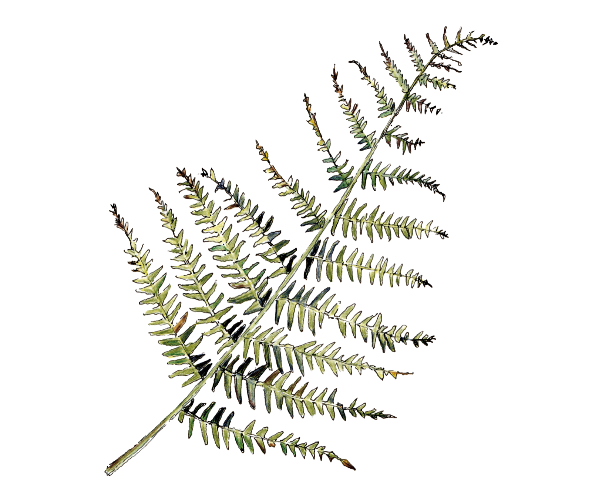
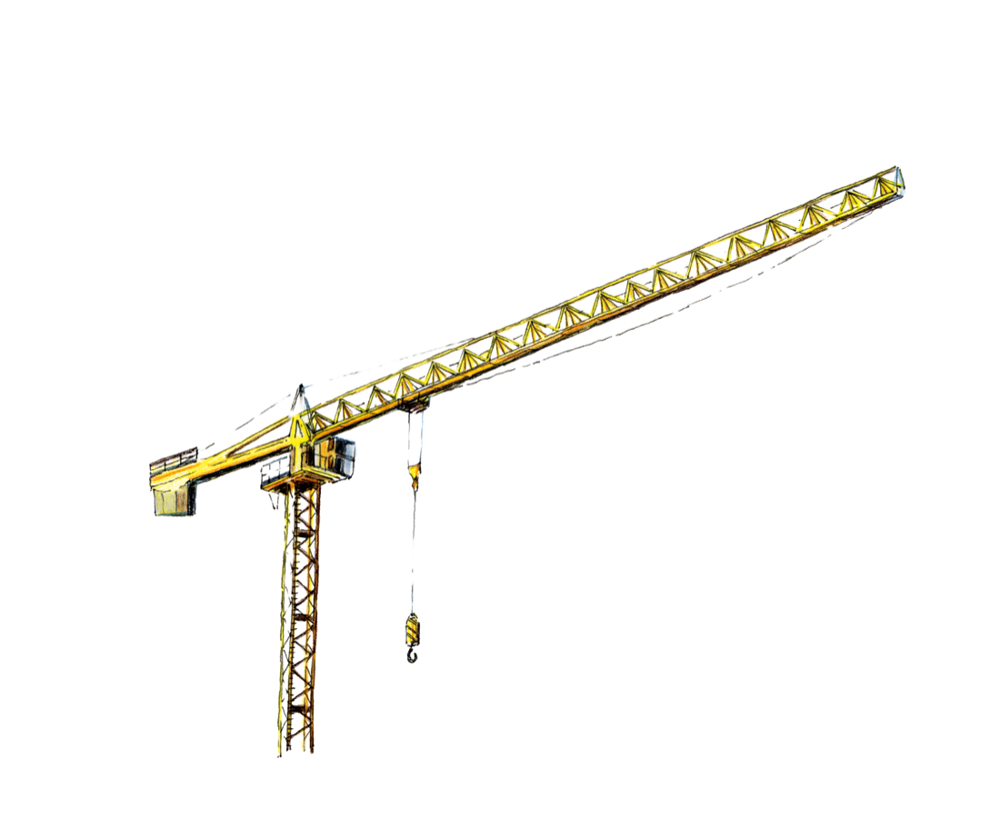
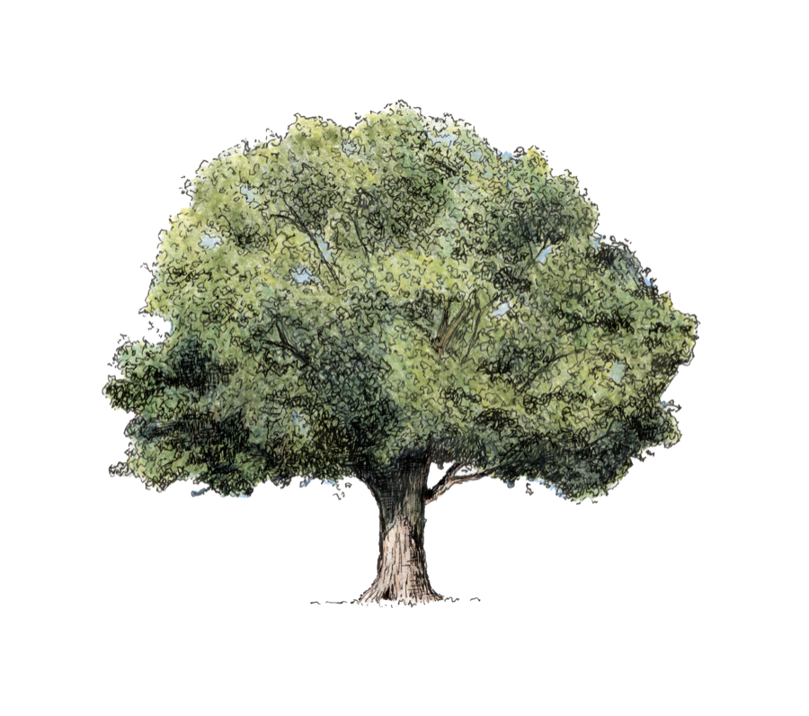
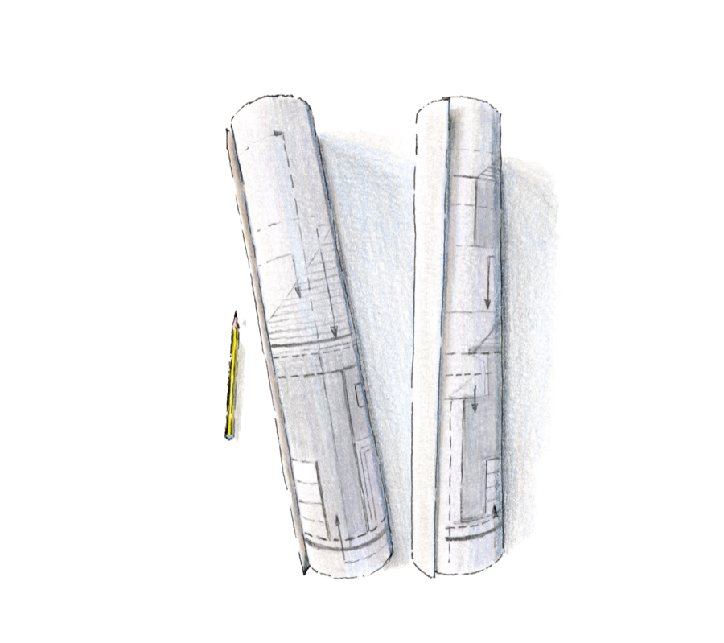
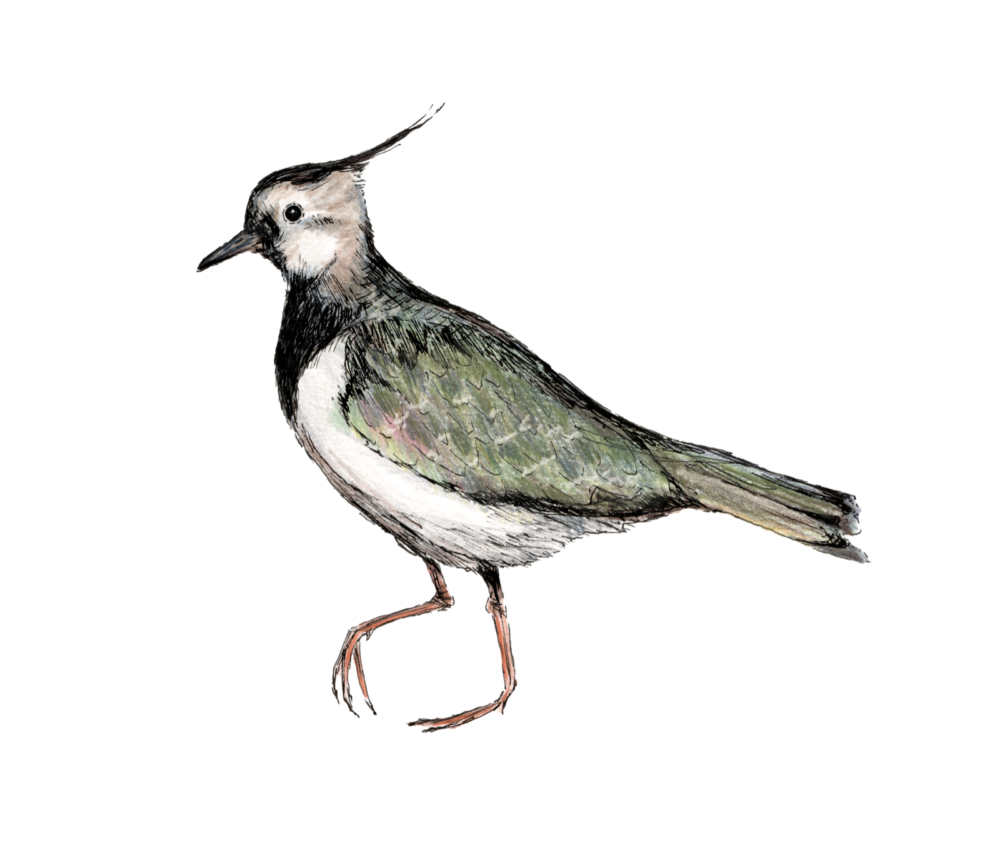
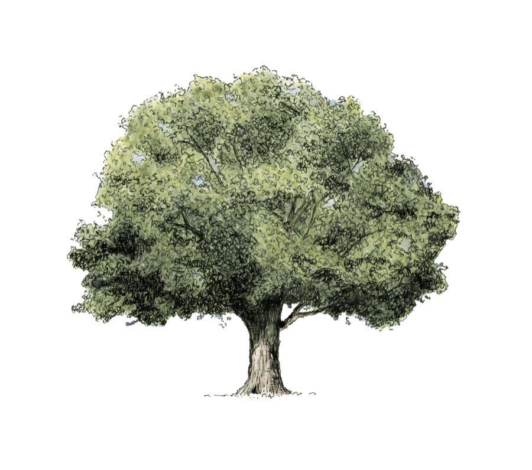

Biodiversity Net Gain for infrastructure
BNG built around your project
Secure the right solution early. Structure payments around your programme. One partner for the full 30 years.
We work alongside your team to create a BNG solution around your project, bringing together land, ecology, planning and long-term delivery.
You get certainty early, flexibility over when you pay and direct access to the people responsible for delivering it.
One partner. From strategy to stewardship.
From the first conversation to year 30, we bring the whole BNG solution together.
- 1
Shape
Work with your planning and ecology teams to define the right route to BNG.
- 2
Find
Identify land around your location, habitat requirements, corridors and catchments.
- 3
Design
Create a bespoke habitat bank around your project, the landscape and the outcomes you need to deliver.
- 4
Secure
Put the contractual commitment in place, with payments structured around your programme.
- 5
Deliver
Create and manage the habitat for 30 years, with long term delivery funds ring fenced.
- 6
Prove
Track, adapt and report on habitat outcomes, with bespoke monitoring shaped around your priorities and the nature recovery stories you want to tell.


One Deal. One Partner.
Built around your project. Not inventory.
We build the BNG solution around your project.
Our landowner network, ecology and planning expertise mean we can find the right land and design a habitat bank around your project's location, ecological requirements and wider objectives.
That might mean land close to your project, particular habitat types or a solution built around a specific corridor or catchment.
If the right habitat bank doesn’t exist, we can build it on demand.

Secure certainty without tying up capital
We put the contractual commitment in place early, securing your route to BNG, while structuring payments around your programme and funding profile.
You know how your BNG will be delivered, without having to fund it before you need to.
Secure your BNG. Pay when your project is ready.
Stay closer to your 30 year commitment
We create, manage, monitor and report on our habitat banks for the full 30 years.
Long term funding protected.
The funds needed for long term delivery are ring fenced and protected for their intended purpose.
Your interests represented.
For major infrastructure projects, we can also give you an ongoing role in the governance of your BNG solution, including involvement in decisions around long term funding and strategy.
Delivery you can see.
Our ecology and habitat management teams track progress on the ground, using insight to inform how habitats are managed. We can also tailor our approach to capture the outcomes that matter to your project, using techniques such as eDNA and bioacoustics to build a richer picture of nature recovery.
You’ll have clear evidence of what’s being delivered, giving you confidence in your BNG commitments and meaningful results to share with stakeholders.
Good for nature. Good for the place around it.
Because we build around your project, we can think beyond the units themselves.
We design habitat creation to support wider nature recovery and, where it makes sense, bring benefits to the communities around your project. That could mean access, education, wellbeing, or stronger connections with the local landscape.
We’ll work with your communications team too, helping you share real outcomes from the ground and show what your investment in BNG is delivering for nature and local communities.

A partner you can trust for the long term
Thirty years is a long relationship.
You’ll have direct access to our senior leadership, backed by a dedicated core team who know your project and who you can turn to when you need us.
We keep the way we work straightforward. We’ll tell you what we think, work through problems with you and stay accountable throughout.
We Partner. We Build. We Commit.
One Deal. One Partner.
Let’s build the right solution around your project
Whether you’re shaping your BNG strategy or ready to secure delivery, talk to us early.
We’ll build the solution around your project, your programme and the long term outcomes you need to deliver.